Chapter 3: Parsing
语法分析
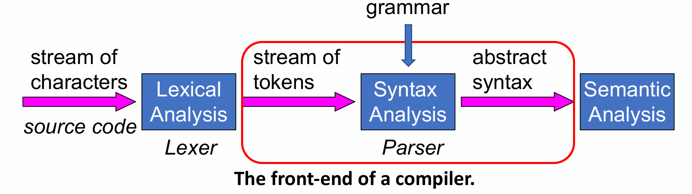
3.1 CFG
形式化描述有效的 token 流，区分无效的 string
CFG 包括
- terminals 集合 T
- non-terminals 集合 N
- start symbol S
- 产生式集合 X->Y1Y2…Yk，X 是 non-terminal，Y 可能属于 T/N/空串
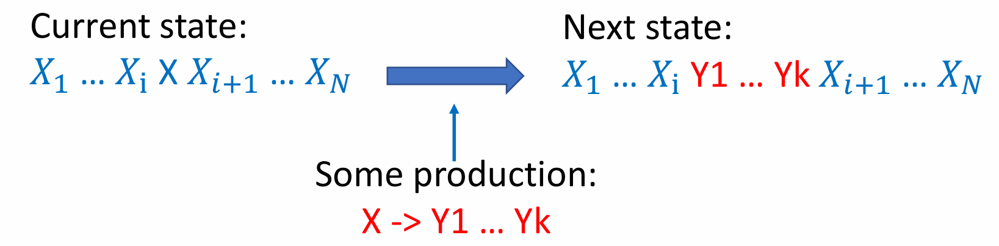
- S 可以通过上面这种方式一步或多步生成的字符串的集合为 L(G)
Recursive Structure
- \(\{(^i)^i|i>=0\}\) 推导式：S->(S)，S->空串
- 二义性 - 有多种推导方式（不同的 parse tree）
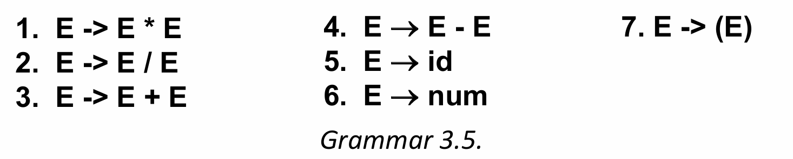
- id * id + id
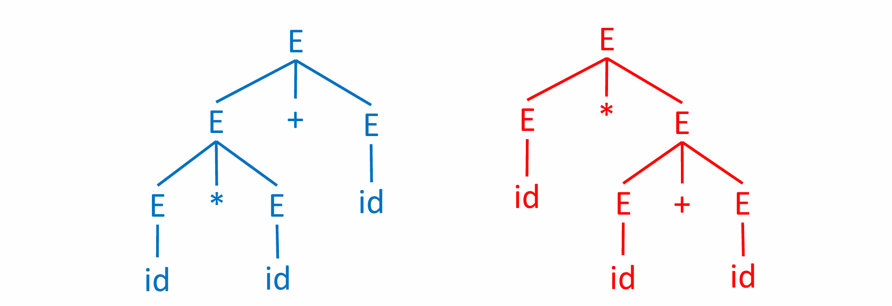
- Parse tree：内部节点是 non-terminal, 叶子结点是 terminal
- 最左推导（每一步替换最左边的 non-terminal）：
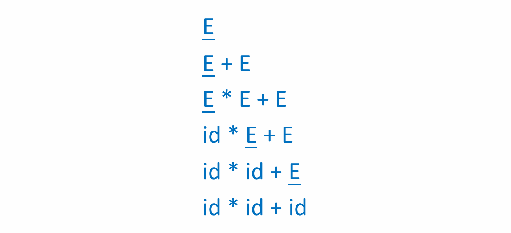
- 推导 => parse tree，但 parse tree 推导不唯一
- id * id + id
- 没有二义性 - 最左和最右推导唯一
- ambiguous - 有两个不同的 parse tree
handle 二义性
- 目标：先算乘除，从左到右计算
- 方法：让乘除离根节点最远，左边的式子离根节点远（左结合性）
- 先推出加减法，才能推出乘除
- 新的 E 总在式子的左边（左递归）
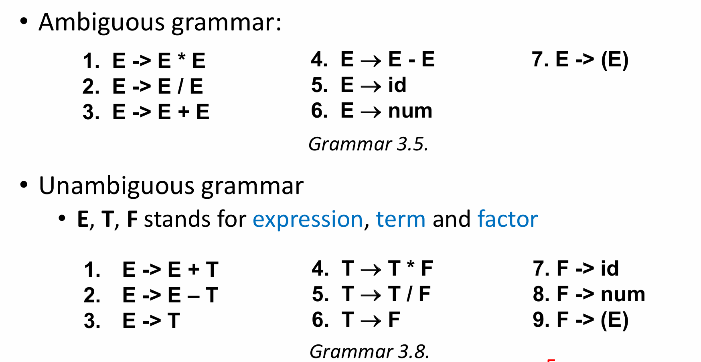
有的语言的二义性可能无法消除，一般不作为编程语言
$ - end of file (EOF)
希望在解析末尾看到 $ - 新增产生式 S'->S$
Build Parser
parser 的类型
- Universal - 可以分析所有的语法，需要频繁回溯，效率低
- Top-Down - 根到叶子
- Bottom-Up - 叶子到根
- 后两种从左到右接收输入接收输入，只能接收部分语法
手写 parser 一般用 LL grammar
自动工具通常用 LR
Top-Down
- 找字符串的最左推导
- Recursive descent Parsing 递归下降（对于复杂的语法需要回溯）
- 第一步：表示 token（enum）
- 第二步：定义从 lexer 获得 token 的方式
- 第三步：为每个 non-terminal 建立函数
- Example：
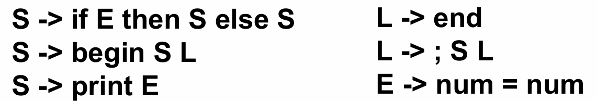
enum token {IF, THEN, ELSE, BEGIN, END, PRINT, SEMI, NUM, EQ}; extern enum token getToken(void); enum token tok; void advance() {tok=getToken();} // 如果当前 token 是预期的 token，获取下一个，否则报错 void eat(enum token t) {if (tok==t) advance(); else error();} void S(void) { switch(tok) { case IF: eat(IF); E(); eat(THEN); S(); eat(ELSE); S(); break; case BEGIN: eat(BEGIN); S(); L(); break; case PRINT: eat(PRINT); E(); break; default: error(); }} void L(void) { switch(tok) { case END: eat(END); break; case SEMI: eat(SEMI); S(); L(); break; default: error(); }} void E(void) { eat(NUM); eat(EQ); eat(NUM); }
- Predictive parsing - 往前看 k 个符号（一般是 1），确定文法，可以处理 LL(k) grammars（递归下降法的特殊情况，不需要回溯）
- \(\gamma,\beta,\delta\) - 终止符号或非终止符号
- t - terminal，X - terminal 或 non-terminal
- \(First(\gamma)\): if \(\gamma\to^*t\beta\), then \(t\in First(\gamma)\)
- \(Follow(X)\): if \(S\to^*\beta Xt\delta\), then \(t\in Follow(X)\)
如何得到 First(X)
- Base case: X 是终止状态，First(X)={X}，否则初始化为空集
- Inductive case: X 不是终止状态，可以推导出 Y1 Y2 ... Yk，First(X) = First(Y1 Y2 ... Yk) = \(First(X)\cup F1 \cup F2 \cup ... \cup Fk\)
- F1 = First(Y1)
- 如果 F1 可能为空，F2 = First(Y2)
- ...
- 如果前面的都可能为空，Fk = First(Yk)
如何得到 Follow(X)
- Base case: 初始化为空集
- Inductive case: Y->aXb
- Follow(X)=Follow(X) \(\cup\) First(b)
- b 可能为空 Follow(X)=Follow(X) $\cup $ Follow(Y)
Nullable - 可以转换为空串
- Base case: Nullable(X) = false
- 对 X 在左边的每个表达式，如果右边的都 nullable，Nullable(X) = true
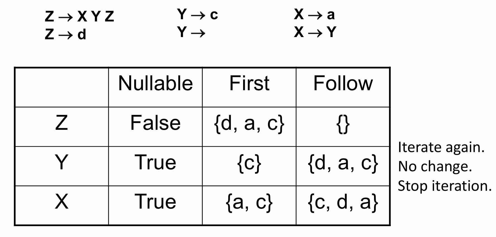
知道了上面这些信息，如何 Parse：
- 填表：当看到下一个 token 为 T 时，应该用什么表达式
- 对于表达式 \(X\to \gamma\)
- if(\(T\in First(\gamma)\)) enter \(X\to \gamma\) in row X, col T
- if \(\gamma\) 可空，\(T\in Follow(X)\)，enter \(X\to \gamma\) in row X, col T
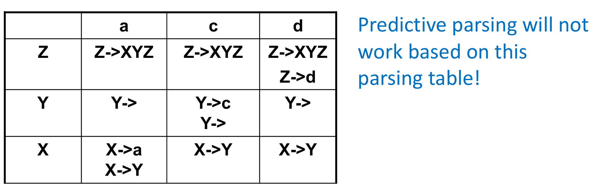
- 每个格子里只有一个 - LL(1)
Noambiguous grammar is LL(k) for any k
Non-Recursive Predictive Parser 具体实现 - 保留栈
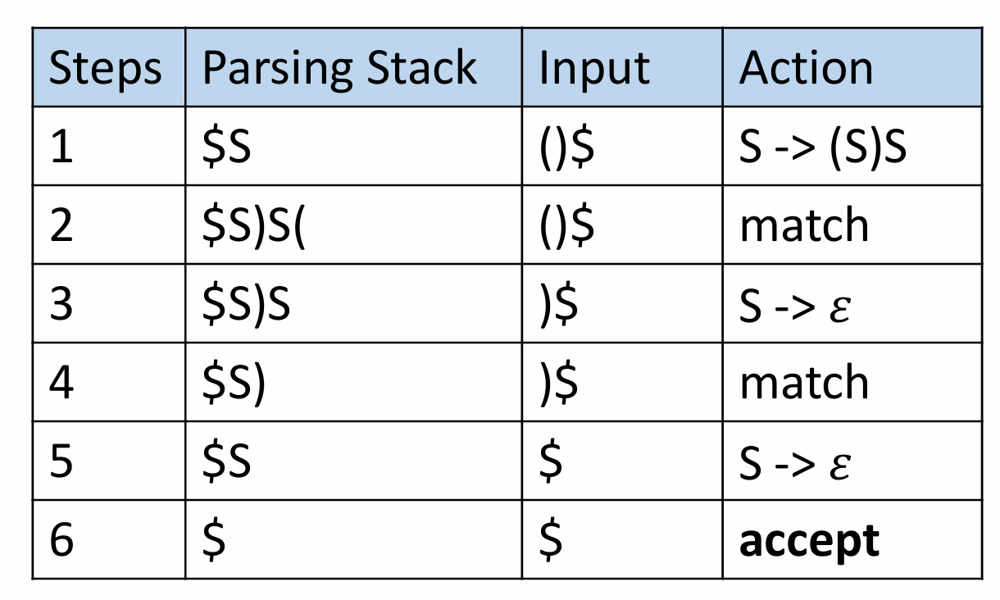
- 表中 parsing stack 右边是栈顶，初始是 $S
- 栈顶如果是 terminal - match
- non-terminal - Derive
如何修改文法，使其成为 LL(1)
不满足的情况：
- Left Recursion - 推导式右边第一个元素与左边相同
- E -> E + T
- E -> T
- 在 LL(1) table 里一定会有 duplicate entries，证明如下：
- 因为 E -> E + T，First(E+T) 包含于 First(E)
- 显然，First(E) 包含于 First(E+T)，所以二者相等
- 因为 E -> T，First(T) 包含于 First(E)
- 如果下一个 token 是 a，a 属于 First(T)，那么 a 也属于 First(E+T)，两条规则都适用
- .......
- 把左递归改成右递归来解决
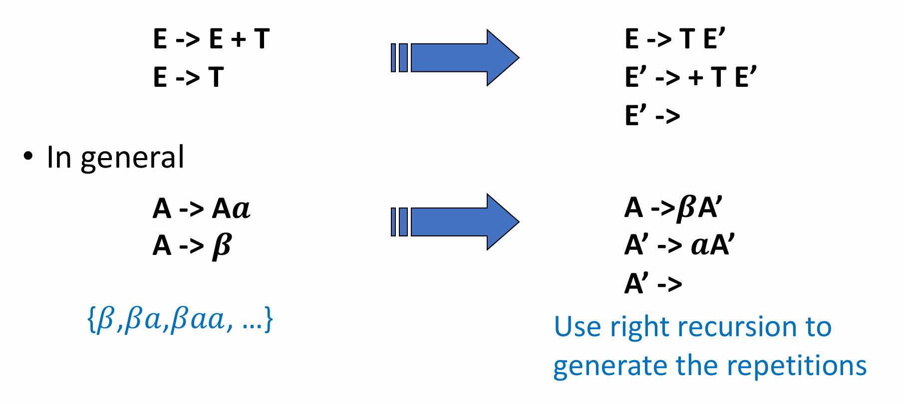
第二种情形：
- 产生式右边有相同的前缀，在 LL(1) table 里一定会有 duplicate entries
- In general
Error Recovery
- 表中的空白条目意味着错误，需要终止/恢复
- 一旦遇到错误就停下来 - 只能检测一个错误
- 输出错误信息，恢复过来，继续 Parsing - better
- 可以通过 deleting, replacing, or inserting tokens 恢复
- Delete token is safer
- skipping tokens util a token in the FOLLOW set is reached
Local Error Recovery
Global Error Repair
- 找到最小的插入和删除集合，使得语法正确
- 插入和删除可以不在错误发现的地方
- 怎么选择插入和删除的方式？
- 修复后可以修复当前报错
- 并且还能往后 parse 足够远（如 4 个 token）
- 则认为这个修复足够好
old stack; //
current stack; //
queue[k]; // 放 k 个 token
when new token is shifted:
{
queue.put(token);
old_stack.push(queue.deque());
if(syntax error){
copy_queue=queue;
copy_queue.change();
attempts to reparse(old_stack, copy_queue);
}
}
Bottom-Up Parsing
从叶子到根，Shift-Reduce Parsing 是 Bottom-Up Parsing 的一般形式
- LR(k) - Rightmost
- 相较于 LL(k) 更 powerful，因为可以看到推导式右边的所有 token 再做决定
- LALR - LR(k) 的一个变种，广泛用于现代编译器
- idea - 右推左，shift & reduce
- shift: push next input on to top of stack
- Reduce: replace the RHS of a production with its LHS（栈顶是 RHS，把它 pop 出来，LHS push 进去）
- accept：shift $，能将栈中的东西转换为初始符号
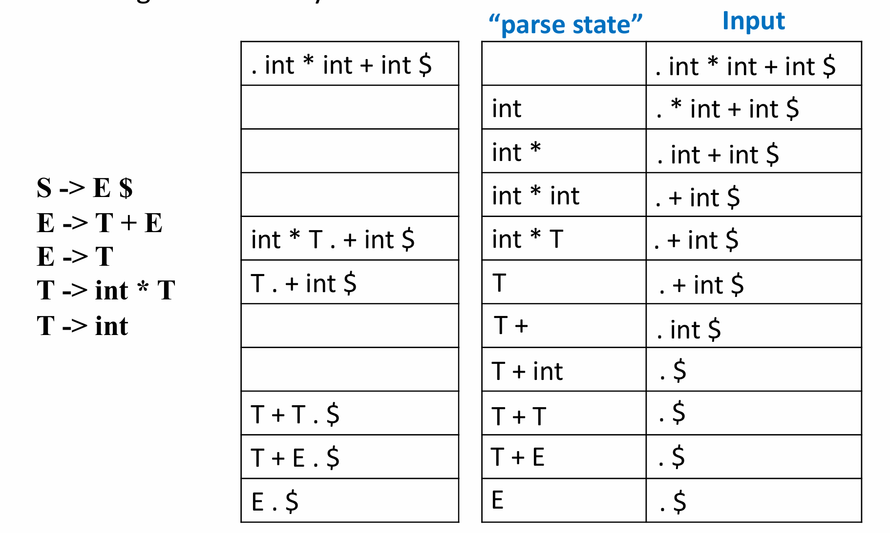
.- parser 现在所在的位置，左边有 terminal 和 non-terminal，右边只有 terminal
LR(0) Parsing
不看输入，只看栈来 shift/reduce
- Idea - 遍历所有的合法状态，构建 NFA/DFA
- 期待下一个符号是什么 -> 应用什么转移方式
构建方式
DFA 状态：
Closure(I) =
repeat
for any item A → α.Xβ in I
for any production X → γ
I ← I 并上 {X → .γ}
until I does not change.
return I
DFA 的状态转移：
Goto(I, X) =
set J to the empty set
for any item A → α.Xβ in I
add A → αX.β to J
return Closure(J)
DFA 构建
- Initialize T to {Closure({S ′ → .S$})}
- 对每条 A → α.Xβ，计算 Goto(I, X)，保存状态和边
Parse:
- 读 input -> shift
.在式子末尾 -> reduce- reduce 后要 goto
- reduce 几个符号要回退几个状态
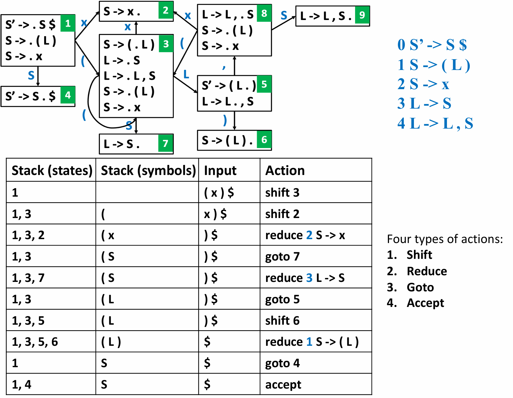
建立 LR(0) table:
- Shift：状态机有边接收 terminal t 从状态 i 转移到状态 n，在 i 行 t 列填入 sn(shift n)
- Goto：状态机有边接收 non-terminal X 从状态 i 转移到状态 n，在 i 行 t 列填入 gn(goto n)
- Reduce：一个状态中，点在式子末尾，在每个 terminal 列都填入 rk(reduce k，k 是推导式的标号)
- Accept：包含 S’-> S . $ 的状态，对应行的 $ 列填入 a(accept)
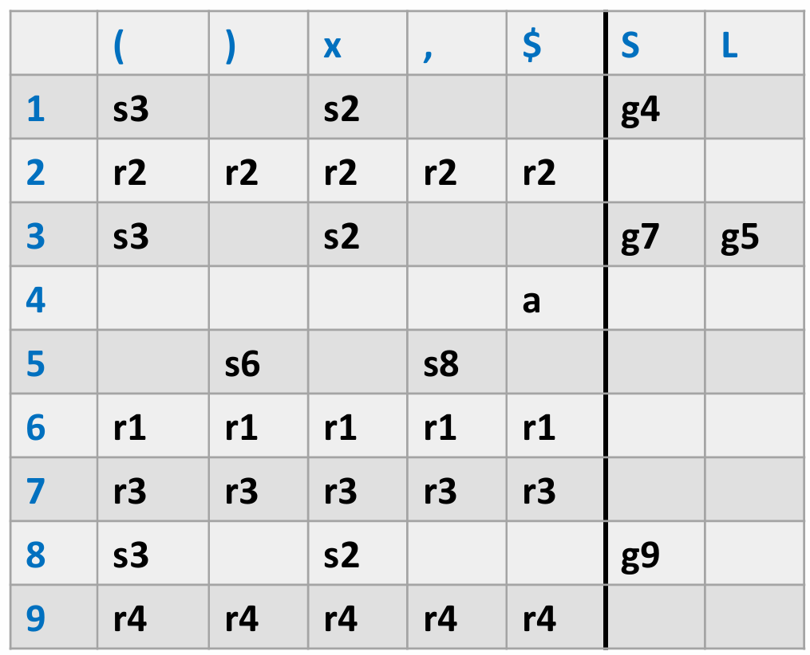
SLR Parsing: Simple LR Parsing
LR(0) 的基础上新增规则：只有下一个 token 在
Follow(A)中，才根据规则A->...reduce
LR(1) Parsing
Idea: SLR 可能无法解决冲突，利用 predict symbol（期待在后面看到什么 token）
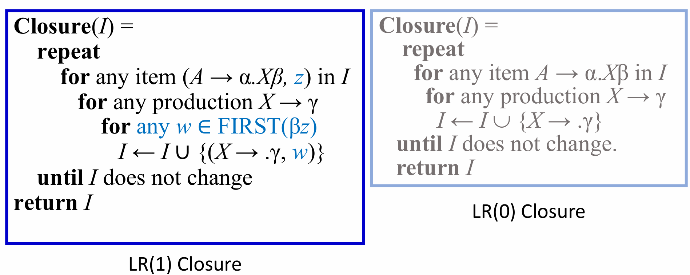
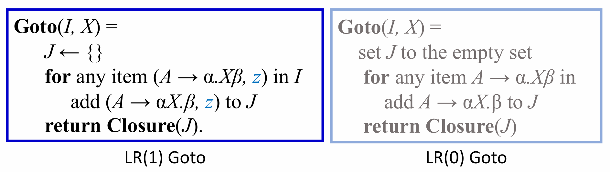
- 起始状态：(S′ → .S $, ?)
- Reduce： 当下一个 token 是 z 时，才可以根据 (A → α., z) reduce
- 比 SLR 更精确
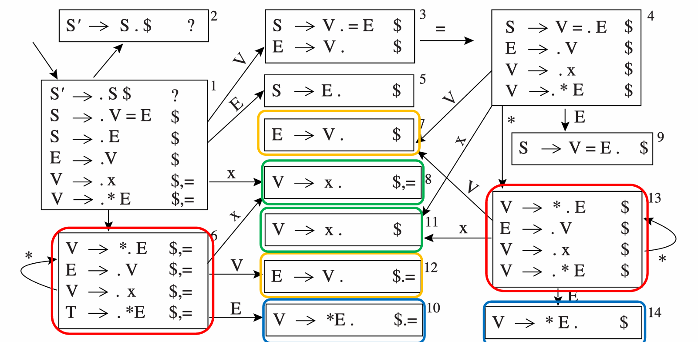
LALR(1) Parsing：把 predict symbol 不同，其他相同的状态放在一起
与 LR(1) 有区别但不大
不同类语法的关系：
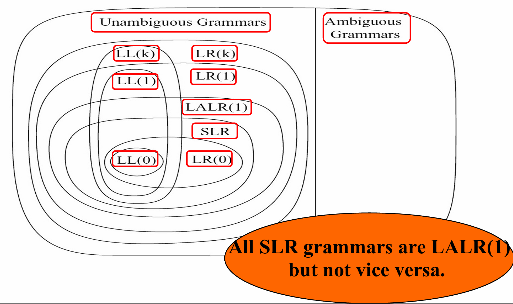
shift-reduce 冲突
if a then if b then s1 else s2
// 上面的表达有两种解释
(1) if a then { if b then s1 else s2 }
(2) if a then { if b then s1 } else s2
- 可以有两种选择：Shift-Reduce Conflict
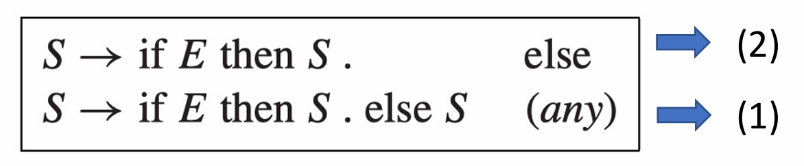
- 大部分语言会把 else 和最近的 then 匹配，通常采用第二种，也就是优先 shift 解决冲突
- 另一种方法：引入辅助符号，重写语法
- M - 所有 then 都有 else 匹配的 if 语句/其他语句
- U - 有的 then 没有 else 匹配的 if 语句
- 最后一条一定是 M，因为如果是没有 else 匹配的语句，应该会跟后面的 else 优先匹配上
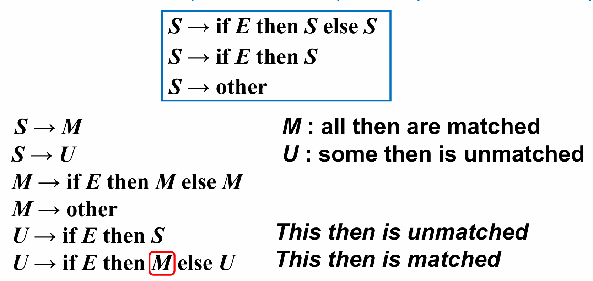
大部分 shift-reduce 冲突和所有的 reduce-reduce 冲突都是语法指定不明确，需要消除歧义
Parser Generator
通过语法自动生成 parser
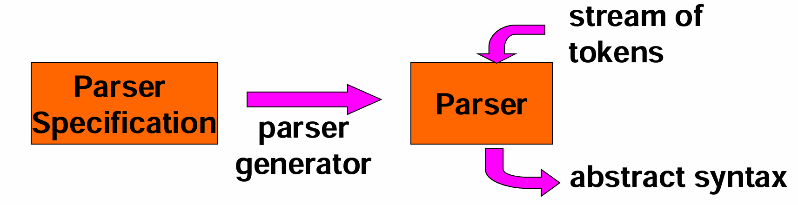
接受 .y 文件，产出 parser 的 .c 文件
{definitions}
%%
{rules}
%%
{auxiliary routines}
%{
#include <stdio.h>
#include <ctype.h>
int yylex(void);
int yyerror (char * s);
%}
%token NUMBER
%%
command: exp {printf("%d\n", $1);};
exp: exp '+' term {$$ = $1 + $3;}
| exp '-' term {$$ = $1 - $3;}
| term {$$ = $1}
;
term: term '*' factor {$$ = $1 * $3;}
| factor {$$ = $1;}
;
factor: NUMBER {$$ = $1;}
| '(' exp ')' {$$ = $2;}
;
%%
int main() {
return yyparse();
}
int yylex(void){
int c;
// eliminate blanks
while ( (c=getchar()) == ' ');
if (isdigit(c)) {
ungetc(c, stdin);
scanf("%d", &yylval);
return (NUMBER);
}
if (c == '\n')
return 0; // stop the parse
return c;
}
int yyerror (char * s){
fprintf (stderr, "%s\n",s ) ;
return 0;
}
- Yacc 的冲突解决：
- 对于 shift-reduce conflicts，优先 shift
- 对于 reduce-reduce conflicts，优先执行出现早的语法